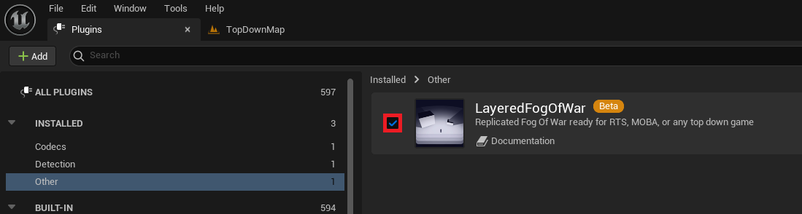

MOBA Template
This tutorial is about making an online MOBA game with the LFOW enabled. I've created a lightweight template for you to migrate to your current project under UE5.4.
You will find the template folder in the content folder provided in the Demo Project
The template includes:
- Create/Join game lobby.
- Team selection lobby.
- ARAM-like map with the fog enabled for 2 teams.
Migration
Use this template in your project by following these steps.
First, ensure that the Layered Fog of War plugin is correctly installed and enabled.

Go to the MOBATemplate folder in the Demo Project, right-click on it, and select Migrate.

A window will open and allow you to select what you want to migrate. Be very careful to select only what's under the TemplateProject.
If you've created an empty project, you can also export the Character and the Cursor. Unreal will then ask you for the content folder of your New Project.

In your New Project, open the Project Settings and change the GameInstance to BP_MT_GameInstance.

Still in the Project Settings, add the 3 maps provided to the list of maps to include for packaging:
MT_GameCreation_MapMT_TeamSelection_MapMobaAram_Map

Finally, set the NetMode to PlayStandalone and add some players. Hit the play button to Create and Join a game.

Explanation
The template has been made to allow fast implementation of the LFOW with network support enabled. The initialization pipeline in Unreal can be troublesome,
especially when adding additional layers like a plugin. The LFOW network setup assigns players during their connection, which is helpful for the plugin
pipeline but might seem too fast and, without the correct knowledge, could become an issue.
To make this pipeline work correctly, three external elements are needed:
GameMode: Used to detect when a pawn is controlled and to set up theFogTeamandLocation.GameState: Used to get theFOWHandler.GameInstance: Used to associate the client'sUniqueNetIDwith aTeam.
A PlayerState element will also be necessary, but only during the Lobby phase. It will be responsible for communication between the server and the client
using RPC functions.
Regarding the LFOW, only two elements will need to be created:
FOW_NetworkSettings: To provide a server class, set the team number, and determine if the fog needs to be replicated.FOW_FogStateReplication_Server: To overrideGetClientTeamIdxand correctly get the client'sTeambased on theUniqueNetID.
Don't forget to copy and use the files from the template for the development of your project!
Documentation built with Unreal-Doc v1.0.9 tool by PsichiX